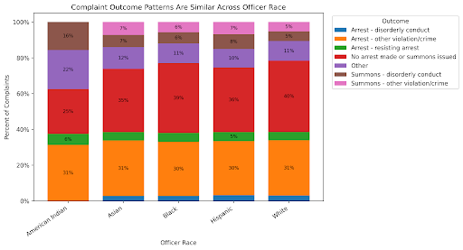

Proposition: Is race associated with patterns of police complaints?
FOR the Proposition

Design Decisions and Rationale:
- Line chart instead of bar chart:
A line chart lets the reader see how complaint volumes move differently across racial groups over time, which is the core of the proposition. A static bar chart would only show total counts and lose the ability to show trends over time. The over-time view is what makes the racial disparity legible, particularly the stop-and-frisk surge and post-2013 decline.
Score: +2 (Earnest) - Removing copies of the same complaint:
The raw dataset has multiple allegation rows per complaint. Counting raw rows would inflate years with more complex complaints and distort the trend. By deduplicating on complaint_id before grouping, each complaint is counted exactly once per year, making the volume comparison honest across time and across racial groups.
Score: +2 (Earnest) - Highlighting stop-and-frisk historical era:
The shaded band (2003–2013) and text label provide factual historical context that explains why Black and Hispanic complaint volumes spiked during that period. This has a score of 0 because it brings attention to certain years and does not change how the data is viewed.
Score: 0 (Neutral) - Excluding year with incomplete data:
2020 had very few complaints recorded across all groups because the dataset was released mid-year (July 2020) and is therefore incomplete. Including it would create a dramatic artificial cliff at the end of every line, misleading readers into thinking complaints collapsed. Dropping it and noting this in the caption is the transparent choice.
Score: +2 (Earnest) - Acknowledging dataset limitations:
The source note explicitly states the dataset source, the deduplication method, and the 2020 exclusion. This is important because the dataset is not a complete count of all NYC police complaints. Flagging the source invites the reader to verify rather than take the visualization at face value.
Score: +2 (Earnest)
AGAINST the Proposition

Design Decisions and Rationale:
- Usage of a stacked bar graph:
Using a stacked bar graph allows the audience to compare the overall distribution of complaint outcome across the racial groups. Displaying information this way highlights the similarities across the racial groups, showing the similar distributions and similar shapes for each race. This design does make it difficult to compare or highlight the similarities among the smaller categories, but the similarities in the large categories alleviates the need to focus on the smaller categories. Other options that were considered was using a group bar graph, but that would overall be too cluttered and the viewer would retain less information.
Score: 2 (Earnest) - Normalizing data to create proportions:
Raw counts were transformed into proportion for each racial group, resulting in 100% across the board as the maximum. This strengthens the opposition since it deceives the viewers that the distributions look very similar for each officer race. This worked well because it hides the differences in the sample sizes, and uses a uniform distribution across the board. An alternative would be considered using the raw counts, but it would highlight a difference due to the racial distribution of the sample. It wasn’t used since it would weaken the argument being made.
Score: -1 (Deceptive) - Charged title:
The title used highlights that graph complaint outcomes are similar across officer races. This works well because it strengthens the argument, promoting the idea to the viewer of similarity being present across officer races. This directly influences how the viewer should view and analyze the data, introducing some sort of bias. The other alternative was to use a neutral title, but it would not support the argument and possibly open other types of interpretation of the data which in turn may support the opposing argument.
Score: -1 (Deceptive)
Final Reflection
[WRITE FINAL REFLECTION PARAGRAPHS HERE.]